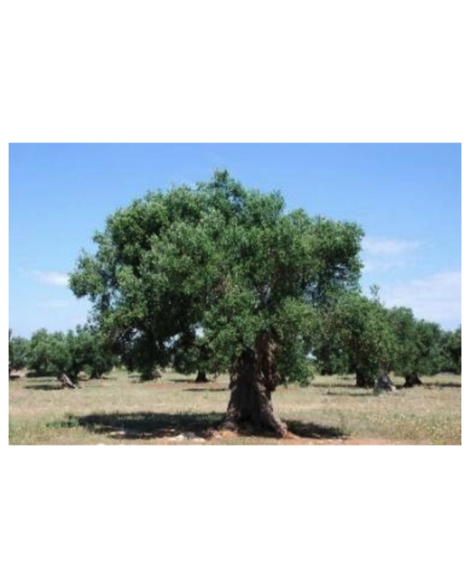

11 Hoja de olivo
11.1 (Olea europaea L.)
Beatriz Martín-Garcíaa, David Arráez Romána,b, Ana María Gómez-Caravacaa, Julio Galvezc, Antonio Segura-Carretero a,b
a Departamento de Química Analítica, Facultad de Ciencias, Universidad de Granada, Avd. Fuentenueva s/n, 18071, Granada, España.
b Centro de Investigación y Desarrollo del Alimento Funcional, Parque Tecnológico de Ciencias de la Salud, Avd. del Conocimiento 37, edificio Bioregión, 18016, Granada, España.
c Departamento de Farmacología, CIBER-ehd, Instituto de Investigación Biosanitaria de Granada (ibs.GRANADA), Centro de Investigación Biomédica (CIBM), Universidad de Granada, Av. del Conocimiento, s/n, 18100-Armilla (Granada), España.
Autor para correspondencia: ansegura@ugr.es, jgalvez@ugr.es y darraez@ugr.es
11.2 Características agronómicas
11.2.1 Taxonomía
El olivo, cuyo nombre científico es Olea europaea L., pertenece a la familia botánica Oleaceae, que incluye 30 géneros y 600 especies (1). El género Olea está compuesto por más de 30 especies, todas ellas procedentes de áreas con condiciones de crecimiento relativamente difíciles (2). La mayoría son arbustos o árboles (2). En la práctica se distingue entre la subespecie sativa, olivo cultivado, y la subespecie sylvestris, olivo silvestre o acebuche que crece espontáneamente por muchas zonas no cultivadas del Mediterráneo y del cercano Oriente (3).
| Familia | Oleácea |
|---|---|
| Género | Olea |
| Especie | Olea europaea |
| Olea europaeavar sylvestris (olivo silvestre) | |
| Olea europaeavar. sativa (olivo cultivado) |
11.2.2 Condiciones de cultivo
11.2.2.1 Requerimientos climatológicos
El olivo es una especie esclerófila y glicofítica adaptada a las altas temperaturas de los veranos que caracterizan al clima mediterráneo. Algunos autores incluso lo consideran como un arbusto del desierto (4). De hecho, el olivo se cultiva bajo condiciones de secano en áreas de muy baja precipitación como Sfax, Túnez, donde la precipitación anual promedio no excede los 200 mm. Por lo tanto, los olivos pueden representar una buena alternativa de alto valor para ser utilizado en climas hostiles donde otras especies apenas sobreviven.
Cabe mencionar que las variedades tienen distintos requisitos de enfriamiento y tolerancia a temperaturas altas o bajas (5). En general, las variedades italianas son las que presentan mayor tolerancia al frío, mientras que las variedades norteafricanas (marroquíes y tunecinas) son las más tolerantes a las altas temperaturas. Durante la estación invernal, la acumulación de frío es indispensable para que el olivo salga de la dormancia y alcance una floración uniforme, se estima que el enfriamiento fisiológico del olivo tiene que ser de 150 a 300 horas a temperaturas inferiores a 9°C. Sin embargo, Hartmann (1953) indicó que algunas variedades pueden necesitar más de 1000 horas por debajo de 7°C para que se produzca la floración (6).

Efecto de altas temperaturas
Los olivos pueden soportar altas temperaturas. Sin embargo, si estas se producen en abril o mayo, en el momento de la floración y durante la formación de nuevos brotes, pueden ser perjudiciales. Hartmann et al. (1980) (7) informó que la incidencia de altas temperaturas antes y durante la floración causó una sustancial disminución de la productividad en California. La exposición de olivos a una temperatura máxima de 35°C durante el período de floración y de 37°C antes del cuajado de la fruta reduce la tasa del fruto al 1,4% (8). Las altas temperaturas (mayores de 33°C) pueden quemar partes de las flores y poner en peligro la producción. Por lo tanto, las temperaturas más favorables de floración, polinización y fertilización estarían comprendidas entre 18 y 22 ° C.
Efecto de bajas temperaturas
El olivo es sensible a las bajas temperaturas, aunque probablemente sea más tolerante al frío que los árboles frutales subtropicales (9). Existe el riesgo de congelación de la fruta cuando las temperaturas están por debajo de los -3°C. El límite de tolerancia a baja temperatura está cerca de -7 a -8°C. Durante la primavera, la vegetación joven e inflorescencias son sensibles a temperaturas bajo cero mientras que, durante la floración, las temperaturas inferiores a 10°C impiden la fertilización (9).
11.2.2.2 Requerimientos del suelo
Cuando el suministro de agua es adecuado, los olivos no son exigentes con respecto a la naturaleza del suelo. Crecen en una variedad de tipos de suelos, desde arenosos hasta arcillosos.
Sin embargo, los olivos prefieren suelos ligeros, moderadamente finos y bien drenados. El árbol es susceptible al anegamiento en la zona de la raíz; por lo tanto, lo suelos arcillosos que retienen el agua (suelos arcillosos que contienen más del 20% de arcilla) no son particularmente adecuados. El árbol generalmente funciona bien en suelos muy pobres, incluso sin fertilización, a excepción de los pantanos o suelos salinos, donde no puede sobrevivir. También prospera en zonas rocosas o en suelos poco profundos, o suelos con un alto contenido de cal, aunque los mejores rendimientos se obtienen en suelos relativamente profundos y fértiles (10). En áreas marginales secas, las condiciones del suelo pueden ser el principal factor de limitación que afecta el crecimiento del olivo. El pH óptimo del suelo para los olivos está entre 7.0 y 8.0, el cual es típico en suelos calcáreos. Un pH muy bajo impedirá el crecimiento de un olivo joven. En el caso de suelos ácidos, una manera simple de aumentar el pH del suelo implica la incorporación de cal en la zona de la raíz (los primeros 60 cm como mínimo) durante la preparación del suelo, trabajo previo a la siembra (10).
11.2.3 Estacionalidad
El olivo despierta su vegetación al comienzo de la primavera (marzo-abril), produciéndose la aparición de nuevos brotes terminales y la eclosión de yemas axilares. La floración se produce en mayo-junio y una vez que tiene lugar la polinización, se produce el cuajado del fruto. En julio-agosto tiene lugar el endurecimiento del hueso, por consiguiente los frutos engordan hasta alcanzar su tamaño normal en octubre. A partir de este momento se produce la maduración. Durante el invierno, el olivo entra en un reposo invernal (11).
11.2.4 Plagas y enfermedades
El olivo crece íntimamente relacionado con una serie de factores bióticos y abióticos que constituyen un agrosistema. La modificación de alguno de éstos factores, por ejemplo la aplicación de un insecticida químico contra una plaga, no sólo afecta a dicha plaga sino que puede destruir a insectos auxiliares que tienen controlada a ésta u otras plagas, y que inmediatamente se potencian, o puede incluso afectar a la fisiología de la planta (12).
11.2.4.1 Principal plaga en hoja de olivo
La cochinilla de la tizne (Saissetia Oleae) perteneciente a los hemípteros está ampliamente extendida en el cultivo del olivar. Su importancia económica es debida fundamentalmente al complejo que forma con el hongo Capnodium Ello Phylum, causante de la negrilla que se instala en las hojas y ramas del olivo atacados por Saissetia Oleae (13).
Su reproducción es por partenogénesis, es decir, no necesitan que el macho las fecunde. Una característica común entre las cochinillas es la producción por sus larvas de una excreción dulce “ligamaza” o “melaza”, constituida por azúcares de desecho. Esta sustancia es utilizada como alimento por otros organismos, entre los que se encuentran los hongos conocidos como negrilla o tizne del olivo, especies estrechamente asociadas a la cochinilla. Las hembras adultas no poseen alas ni extremidades, tienen el aspecto de medio grano de pimienta, permaneciendo inmóviles y unidas a la planta por su aparato bucal. Son fáciles de reconocer por su forma ovalada y cubiertas por una especie de caparazón marrón, marcado por una quilla longitudinal y dos transversales a modo de “H”(14).
Entre los daños que ocasiona la cochinilla de la tizne, se pueden diferenciar entre daños directos ocasionados por la succión de la savia causados por la cochinilla, o indirectos que son producidos por la negrilla (Capnodiumaelophillum), hongo saprófito que vive a expensas de la melaza producida por la cochinilla y que recubre las ramas y las hojas de olivo, interfiriendo así en la fisiología del árbol, como consecuencia de esto se puede producir la caída de las hojas, acortamiento de los brotes y un menor índice de floración (13).
11.2.4.2 Principales enfermedades de las hojas de olivo
11.2.4.2.1 Repilo (Spilocaea Oleagina)
Con el nombre de repilo, vivillo, vivo, caída de hojas, etc. se designa a una enfermedad causada por un hongo de desarrollo interno (14). El ataque se manifiesta por la aparición de unas manchas circulares negruzcas o amarillentas, en la cara superior de las hojas, que van aumentando gradualmente de tamaño e invaden el nervio central y el peciolo provocando la caída de las hojas. En ocasiones ataca también el fruto y los brotes tiernos. Dependiendo de las condiciones meteorológicas del año en cuestión, la caída de las hojas por el ataque del hongo puede producirse en otoño o en primavera, ocasionando en ambos casos grandes mermas en la producción de aceitunas (15) .
11.2.4.2.2 Emplomado o repilo plomizo
El emplomado o repilo plomizo (Pseudocercospora Cladosporioides) se trata de una enfermedad producida por un hongo de desarrollo interno que en ocasiones ha sido confundido con el repilo típico (Spilocaea), que produce defoliaciones y a veces ataca a los frutos. A diferencia de Spilocaea, los síntomas en las hojas son poco aparentes, sólo se aprecia una alta defoliación, aunque se ha observado recientemente que las hojas caídas al suelo o las que están afectadas en el árbol presentan puntitos negros repartidos por todo el envés de las mismas, que corresponden con las estructuras de reproducción del hongo (14).
11.2.4.2.3 Marchitez o verticilosis del olivo
La verticilosis (Verticillium Dahliae) está causada por un hongo de suelo, que tras entrar por la raíz del olivo infecta los vasos conductores de la planta impidiendo la circulación de la savia hacia las zonas superiores al ataque por lo que la planta se marchita. Esta enfermedad está afectando a un porcentaje importante del olivar. Se distinguen dos complejos sintomatológicos denominados “Apoplejía” y “Decaimiento lento”. La apoplejía es una muerte rápida de las ramas o de la planta completa que se produce en otoño e invierno; el decaimiento lento se suele observar en primavera, los síntomas más típicos son la necrosis y momificado de las inflorescencias mientras que las hojas generalmente se desprenden, excepto las del extremo (16).
11.2.4.2.4 Tuberculosis
La tuberculosis (Pseudomonasavastanoipv. savastanoi), es una enfermedad de origen bacteriano. La infección causada por estas bacterias es fácil de detectar por la aparición de tumores que se desarrollan principalmente aislados sobre las ramas de los árboles como respuesta a su ataque, aunque también puede afectar al resto del vegetal: raíces, troncos, hojas y frutos. En las ramas de 2 o 3 años, se forman pequeños tumores que al principio son verdes y de superficie lisa, aumentando progresivamente haciéndose duros y de una superficie irregular y agrietada, que en ocasiones es aprovechado por otras plagas para hacer la puesta de huevos. Conforme avanza la enfermedad los tumores dejan de estar lisos y aparecen con grietas.
11.3 Características nutricionales
11.3.1 Composición nutricional de la hoja de olivo
Las hojas de olivo son una fuente rica de minerales, carbohidratos, fibra cruda, proteínas y lípidos (Cuadro 11.2). Entre los minerales que contiene la hoja de olivo, el calcio es el elemento predominante seguido del potasio (17). Las hojas de olivo contienen todos los aminoácidos esenciales (excepto metionina) en cantidades favorables siendo el aminoácido más esencial la lisina seguido de la leucina (17).
| Nutriente |
|
|
|
|
|---|---|---|---|---|
| Proteína (%) | 10.6 | 10.5-13.1 | 5.04-7.61 | 5.45 |
| Lípidos (%) |
|
9.13-9.8 | 1.05-1.30 | 6.54 |
| Fibra cruda (%) | 14.5 |
|
|
|
| Carbohidratos totales (%) | 74.7 | 8.74-32.63 | 37.14-42.58 |
|
| Ceniza (%) | 6.8 | 4.37-6.0 | 2.86-4.45 |
|
| Minerales (mg/100g de hoja seca) | ||||
| Ca | 1175 | 812.5-1121.2 |
|
|
| P | 115 | 164.4-302.9 |
|
|
| Na | 140 | 1.45-2.78 |
|
|
| K | 656 | 1464.3-1810.6 |
|
|
| Mg | 193 | 117.3-193 |
|
|
| Fe | 19.1 | 2.31-3.26 |
|
|
| Cu | 0.9 | 2.82-4.51 |
|
|
| Mn | 4.3 | 1.76-3.61 |
|
|
| Zn | 2.5 | 1.89-2.43 |
|
|
| Aminoácidos (g/100 g de proteína) | ||||
| Lisina | 17.12 |
|
|
|
| Valina | 6.14 |
|
|
|
| Leucina | 8.82 |
|
|
|
| Isoleucina | 4.12 |
|
|
|
| Fenilalanina | 6.23 |
|
|
|
| Tirosina | 2.24 |
|
|
|
| Cistina | 8.15 |
|
|
|
| Therionina | 2.32 |
|
|
|
| Histidina | 2.37 |
|
|
|
11.3.2 Principales compuestos bioactivos en la hoja de olivo
Los compuestos bioactivos presentes en la hoja olivo han atraído el interés de los investigadores, ya que diversos estudios han demostrado que dichos compuestos poseen propiedades beneficiosas para la salud (21–23). Los compuestos bioactivos más abundantes en la hoja son los tocoferoles, triterpenoides, pigmentos y los compuestos fenólicos (Cuadro 3).
| Compuestos bioactivos en hoja de olivo | Compuestos bioactivos en hoja de olivo | Compuestos bioactivos en hoja de olivo |
|---|---|---|
| Fracción lipídica (1-1.3%) | Galactolípidos (53%) Lípidos neutros (25%) Fosfolípidos (21%) | |
| Otros compuestos | Tocoferoles (41-25 mg/kg) Triterpenos (342- 837 mg/kg) -Ácido oleanólico:(3.0-3.5%) Pigmentos -Clorofila (11600-16800 mg/kg) -Carotenoides(28-3110 mg/kg) Volátiles Hidrocarburos (2057-3400 mg/kg) -Mannitol(8%w/w) Ceras(915-874 mg/kg) Alcoholes alifáticos (95-311 mg/kg) Compuestos fenólicos (24.7-143.2x103 mg/kg de hoja seca) | Tocoferoles (41-25 mg/kg) Triterpenos (342- 837 mg/kg) -Ácido oleanólico:(3.0-3.5%) Pigmentos -Clorofila (11600-16800 mg/kg) -Carotenoides(28-3110 mg/kg) Volátiles Hidrocarburos (2057-3400 mg/kg) -Mannitol(8%w/w) Ceras(915-874 mg/kg) Alcoholes alifáticos (95-311 mg/kg) Compuestos fenólicos (24.7-143.2x103 mg/kg de hoja seca) |
Los tocoferoles (Vitamina E) constituyen a un grupo químicamente caracterizado como derivados de 6-hydroxychromano conteniendo una unidad isoprenoide. El grupo se divide en dos grupos fundamentales, cuatro tocoferoles (α-, β-, γ- y δ-) y cuatro tocotrienoles (α-, β-, γ- y δ-) que se diferencian entre sí en la saturación de la cadena lateral (24), los primeros tienen una cadena saturada y los segundos una insaturada con tres dobles enlaces. El α-tocoferol es considerado como el principal representante de los tocoferoles presentes en la hoja de olivo (25), ya que exhibe un papel protector en la peroxidación lipídica de lípidos de membrana, lipoproteínas y grasas de depósito, protegiendo así contra la aterosclerosis, induciendo la apoptosis en células tumorales y modulando oncogenes (26).
Los triterpenos pentacíclicos son moléculas constituidas por 30 carbonos que están agrupados en cinco ciclos de seis carbonos con diferentes sustituyentes (27). Estas moléculas se biosintetizan mediante la ruta citosólica acetato/mevalonato que produce (3S)-2,3-oxidoescualeno (OS) (28). Los principales triterpenoides encontrados en el reino vegetal son ácido oleanólico, ácido maslínico, ácido ursólico, eritrodiol y uvaol. El contenido de ácido oleanólico prevalece con respecto a los ácidos eritrodiol, uvaol, ursólico y maslínico en las hojas de olivo (29). Se ha descubierto que las actividades antioxidantes no enzimáticas del ácido oleanólico y del ácido ursólico en un sistema de liposomas superan incluso la actividad de α-tocoferol en ciertas condiciones (30). Los ácidos como el eritrodiol, el uvaol y el ácido maslínico poseen propiedades beneficiosas para la salud humana, ya que tienen propiedades antihipertensivas, anti ateroscleróticas, antioxidantes, cardiotónicas o antidistíricas (31,32).
De entre los pigmentos, la clorofila y los carotenoides, son abundantes en las hojas de olivo y están directamente involucrados en los procesos de recolección de luz en la fotosíntesis. Existen evidencias acerca de las propiedades funcionales de los productos derivados de la clorofila a partir de sus efectos beneficiosos sobre la supresión del olor y la curación de heridas (33). El β-caroteno, es conocido por tener actividad antioxidante en la aterogénesis y en el cáncer (34).
La composición química de las fracciones volátiles de las hojas incluye principalmente aldehídos, 2-decenal- (E), acetaldehído de benceno, 2-undecenal, valenceno y oleato de etilo, (E) -2-hexenal, (E, E) -a-farneseno, b-cariofileno, (E) -b-damascenona, (E,Z)-2,4-hexadienal, nonanal y (E)-b-damascone (35). Las actividades antibacterianas y antifúngicas de las fracciones volátiles de hojas frescas y secas han sido reportadas por Brahmi et al. (36).
Entre los hidratos de carbono, el manitol es el principal azúcar característico de las hojas de olivo y su biosíntesis es generalmente conocida en toda la familia Oleaceae. El manitol ofrece a las hojas de olivo una serie de propiedades con aplicaciones ventajosas en la industria alimentaria y farmacéutica. Gracias a su potencia como edulcorante (equivalente al 70% de la sacarosa) con bajo valor calórico (2 kcal/g), no causa caries y su metabolismo en humanos no depende de la insulina, por lo que es apta para el consumo de personas diabéticas. Además, tiene efectos saludables como antioxidante (31).
Los compuestos fenólicos se pueden clasificar con base en el número de unidades fenólicas que presenta la molécula, clasificándolos así en compuestos fenólicos
simples y en polifenoles (37). La hoja de olivo contiene diferentes compuestos fenólicos que se clasifican por familias en compuestos fenólicos simples (ácidos
hidroxicinámicos, ácidos hidroxibenzoicos y feniletanoides), secoiridoides y flavonoides (flavanoles, flavonoles y flavonas) (Figura 1.) (38). Los secoiridoides son
la principal familia fenólica presente en las hojas de olivo, y la oleuropeína es el componente principal de la fracción fenólica con una concentración que oscila entre
24.7-143.2x103 mg/kg de hoja seca (39), seguido de hidroxitirosol, la flavona-7- glucósidos de luteolina, apigenina, y verbascósido. El hidroxitirosol es un precursor
de la oleuropeína y el verbascósido es un glucósido conjugado de hidroxitirosol y del ácido cafeico(40).
Figura 11.1: Ejemplos de compuestos fenólicos presentes en la hoja de olivo (38).
11.3.3 Productos alimenticios de la hoja de olivo
Las hojas de olivo han sido utilizadas tradicionalmente como infusiones por sus cualidades beneficiosas para la salud, o como una decocción para la tos (55). En el siglo XIX, las infusiones se usaron para combatir la malaria (56). De acuerdo con la medicina popular tunecina, las hojas de olivo se recomiendan en una amplia gama de dolencias, incluidos los trastornos inflamatorios, las infecciones bacterianas y la hipertensión, aunque los modos de preparación y administración varían. El dolor de oídos se cura usando hojas de olivo en aceite de oliva caliente con sal. El zumo de hoja de olivo, a pesar de su irritación, se recomienda para curar el tracoma. Además, masticar hojas de olivo se usa para aliviar los dolores de muelas y para tratar la irritación labial, mientras que la decocción de las hojas, utilizada como enjuague bucal líquido, se usa para tratar la estomatitis aftosa, la gingivitis y la glositis (57).
11.3.4 Propiedades terapéuticas y farmacológicas
Numerosos estudios han demostrado que la hoja de olivo presenta diversas propiedades terapéuticas, atribuidas principalmente a su contenido en compuestos fenólicos y en triterpenos pentacíclicos que producen efectos beneficiosos para la salud. En la Cuadro 11.4 se recoge, a modo de resumen, algunas propiedades terapéuticas de estos compuestos bioactivos presentes en extractos de la hoja de olivo con sus mecanismos atribuidos.
| Compuesto | Propiedades Terapéuticas | Mecanismo o efecto | Ref | ||
|---|---|---|---|---|---|
| In vivo | Estudios en animales | -Ácido oleanólico y ácido ursólico. -0,27% de mezcla 1:1 de ácido oleanólico y ácido ursólico aislados de hojas de olivo silvestre africano (AO). -0.71% de ácido oleanólico aislado de hojas de olivo griego (GO) -2.47% de ácido oleanólico aislado del cultivar de Ciudad del Cabo (CT) | Antihipertensivas, diuréticas, antiateroscleróticas, antioxidantes e hipoglucemiantes del ácido oleanólico y ursólico y los tres aislados (GO, AO y CT) | Se estudiaron, en un modelo genético de rata resistente a la insulina, los tres aislamientos, en una dosis de 60 mg/kg de peso corporal durante 6 semanas de tratamiento, impidiendo el desarrollo de una hipertensión grave y de aterosclerosis y mejoraron la resistencia a la insulina de los animales de experimentación. |
|
| Ácido oleanólico | Actividad antihiperglucémica | El ácido oleanólico reduce la glucosa sérica y los niveles de insulina en ratones alimentados con una dieta alta en grasas y mejora la tolerancia a la glucosa. |
|
||
| Oleuropeína | Neuroprotectora | La oleuropeína puede influir en el contenido y en la homeostasis del agua del cerebro al aumentar la integridad de la barrera hematoencefálica (BBB), modulando el volumen celular de las neuronas y los astrocitos directamente. |
|
||
| Oleuropeína | Anti-aterosclerótica | La administración de oleuropeína reduce los niveles séricos de lípidos. |
|
||
| Oleuropeína | Propiedades antioxidantes en el daño de la mucosa intestinal | Disminuciones significativas en la concentración de ácido tiobarbitúrico (TBARS) mediante la administración de oleuropeína en ratas tratadas con oleuropeína. |
|
||
| Hidroxitirosol y su derivado triacetilado | Reducción de lípidos y efectos antioxidantes | El hidroxitirosoltriacetilado y el hidroxitirosol presentes en las hojas de olivo son eficientes en la protección contra la dislipidemia al disminuir el colesterol total (TC), los triglicéridos (TG) y el colesterol de lipoproteínas de baja densidad (LDL-C) en suero y al aumentar el colesterol de lipoproteínas de alta densidad (HDL-C), disminuyendo así el índice aterosclerótico. Además, también mejoran el estado antioxidante al reducir la peroxidación lipídica y al potenciar a las enzimas antioxidantes. |
|
||
| Extractos de hoja de olivo compuestos por: oleuropeína (19.8%), luteolina-7-O-glucósido (0.04%), apigenina-7-O-glucósido (0.07%), quercetina (0.04%) y ácido cafeico (0.02%) | Disminución de la peroxidación lipídica en el hígado de ratas expuestas a estrés por frío | Sincronización de enzimas antioxidantes e inhibición de la peroxidación lipídica en el hígado |
|
||
| Oleuropeína (356 mg/g), tirosol (3.73 mg/g), hidroxitirosol (4.89 mg/g), y ácido caféico (49.41 mg/g) | Mejora de la nefrotoxicidad por gentamicina | Inhibición de la peroxidación de lípidos, aumento del contenido de glutatión renal y actividad de enzimas antioxidantes |
|
||
| Estudios en humanos | Oleuropeína | Acción calmante en el tratamiento del eritema inducido por UVB | La oleuropeína exhibe efectos inhibidores sobre especies de nitrógeno reactivas, incluido el radical óxido nítrico (NO) |
|
|
| In vitro | Estudios en humanos | Oleuropeína e hidroxitirosol | Muerte celular apoptótica del cáncer de mama humano MCF-7 células | Bloqueo significativo de la transición de fase G1 a S manifestado por el aumento del número de células en la fase G0 / G1. |
|
| Aromadendrina (dihidrokaempferol) | Actividad antiinflamatoria | Decrecimiento marcado de la expresión de moléculas de membrana (ICAM-1) y la liberación de factores inflamatorios-solubles (MCP-1 e IL-8) inducidos por IFNγ e histamina en los queratinocitos normales NCTC 2544 |
|
||
| Oleuropeína (19.8%), luteno-7-O-glucósido (0.04%), apigenina-7-O-glucósido (0.07%), quercetina (0.04%) y 0.02% de ácido caféico | Actividad protectora sobre los leucocitos de sangre periférica contra el daño inducido por adrenalina en el ADN | Activación sinérgica de varios mecanismos moleculares como la eliminación de especies reactivas de oxígeno (ROS) y el aumento de la capacidad antioxidante de las células. |
|
||
| Oleuropeína, hidroxitirosol, acetato de hidroxitirosol, luteolina, luteolina-7-O-glucósido y luteolina-O-glucosido | Antiproliferativo contra el cáncer y las células endoteliales | Inhibición de la proliferación celular |
|
||
| Apigenina-7-glucósido, oleuropeína | La apigenina-7-glucósido del extracto de hoja de olivo fue la principal responsable de la diferenciación de HL-60, mientras que la oleuropeína demostró ejercer una influencia sobre esta diferenciación | La inhibición del crecimiento de las células HL-60 tratadas con los extractos de hoja de olivo puede atribuirse a la detención y/o apoptosis del ciclo celular mediada por la diferenciación |
|
11.4 Referencias
Cronquist A. An integrated system of classification of flowering plants. Columbia University Press, New York; 1981.
Bracci T, Busconi M, Fogher C, Sebastiani L. Molecular studies in olive (Olea europaea L.): overview on DNA markers applications and recent advances in genome analysis. Plant Cell Rep. 2011;30:449–62.
J.M. Mateo Box. Prontuario de agricultura. Cultivos agrícolas-Olivicultura. Mundi-Prensa Libros, editor. 2005. 940 p.
Schwabe, W.W. & Lionakis SM. Leaf attitude in olive in relation to drought resistance. J Hortic Sci. 1996;71:157–66.
Bongi G. The mechanism of photosynthesis in the olive tree. Photosynthetica. 1987;21(4):572–8.
Tubeileh A, Bruggeman A, Turkelboom F. Growing Olives and Other Tree Species in Marginal Arid Environments. Natural Re. Alepo, Syria; 2004. 43 p.
Hartmann DL, David A. Short. On the use of earth radiation budget statistics for studies of clouds and climate. J Atmos Sci. 1980;37:1233–50.
Porlingis IC, Voyiatzis D.G. Paclobutrazol decreases the harmful effect of high temperatures on fruit set in olive trees. Acta Hortic. 1999;474:241–4.
Denney JO and GRM. Modeling the thermal adaptability of the olive (Olea europaea L.) in Texas. Agric For Meteorol. 1985;35:309–27.
Pansiot FP and HR. Improvement in olive cultivation. FAO Agricultural Studies. Rome, Italy; 1961. 249 p.
Guerrero A. Nueva olivicultura. 5o Edition. Mundi-Prensa, editor. Nueva olivicultura. Madrid; 2003.
Saavedra, M.M. y Pastor M. Sistemas de cultivo en el olivar. Ed. Agrico. Madrid; 2002.
Porras Piedra A, Cabrera de la Martín, Javier Soriano Colina, María L. Olivicultura y Elaiotecnia. Colección Estud. 1995;Volumen 28:174.
José Luis Molina de la Rosa et. al.]. Técnicas de cultivo: Plagas y enfermedades del olivo. Consejería. 2017. 50-54,79-88 p.
Andrés F. Enfermedades y plagas del olivo. 2o ed. Riq. Jaén; 1991. 646 p.
Miguel Ángel Castellar Sánchez. Plagas y enfermedades del olivo (Olea europaea) Fam. de las Oleáceas. Protección. E.F.A. La Malvesia, editor. 17-49 p.
Ibrahim EH, Abdelgaleel MA, Salama AA. Chemical and nutritional evaluation of olive leaves and selection the optimum conditions. JAgricRes. 2016;42(1):445–59.
Picolotob RS, Cichoskia AJ, Wagnera R, Ragagnin de Menezesa, C. Zepkaa LQ, Da Crocec DM, Barina JS. Olive leaves offer more than phenolic compounds – Fatty acids and mineral composition of varieties from Southern Brazil. Ind Crops Prod. 71:122–7.
Boudhrioua N, Bahloul N, Ben Slimen I, Kechaou N. Comparison on the total phenol contents and the color of fresh and infrared dried olive leaves. Ind Crops Prod. 2009;29(2-3):412–9.
Erbay Z, Icier F. Optimization of drying of olive leaves in a pilot-scale heat pump dryer. Dry Technol. 2009;27:716–427.
Benavente-García O, Castillo J, Lorente J, Ortuño A, Del Rio JA. Antioxidant activity of phenolics extracted from Olea europaea L. leaves. Food Chem. 2000;68:457–62.
Kontogianni VG, Gerothanassis IP. Phenolic compounds and antioxidant activity of olive leaf extracts. Nat Prod Res. 2012;26(2):186–9.
Omar SH. Cardioprotective and neuroprotective roles of oleuropein in olive. Saudi Pharm J. 2010;18(3):111–21.
Dilis, V.; Trichopoulou, A. Boskou D. Mediterranean diet and olive oil consumption-estimations of daily intake of antioxidants from virgin olive oil and olives. In olive oil: minor constituents and health. CRC Press. 2008. 201-210 p.
Lee OH, Lee BY, Lee J, Lee HB, Son JY, Park CS, et al. Assessment of phenolics-enriched extract and fractions of olive leaves and their antioxidant activities. Bioresour Technol. 2009;100(23):6107–13.
Gómez-Caravaca AM, Verardo V, Caboni MF. Chromatographic techniques for the determination of alkyl-phenols, tocopherols and other minor polar compounds in raw and roasted cold pressed cashew nut oils. J Chromatogr A. 2010;1217(47):7411–7.
Guinda Á, Rada M, Delgado T, Gutiérrez-Adánez P, Castellano JM. Pentacyclic Triterpenoids from Olive Fruit and Leaf. J Agric Food Chem. 2010;58:9685–91.
Crozier A, Clifford MN, Ashihara H. Plant secondary metabolites: Occurrence, structure and role in the human diet. Backwell. Crozier A, Clifford MN, editors. Oxford,UK; 2006. 47-101 p.
Tsimidou, M. Z.; Papoti VT; Bioactive ingredients in olive leaves. In olives and olive oil in health and disease prevention. 2010;349–56.
Yin MC, Chan KC. Nonenzymatic antioxidative and antiglycative effects of oleanolic acid and ursolic acid. J Agric Food Chem. 2007;55(17):7177–81.
Guinda Á, Castellano JM, Santos-Lozano JM, Delgado-Hervás T, Gutiérrez-Adánez P, Rada M. Determination of major bioactive compounds from olive leaf. Food Sci Technol. 2015;64:431–8.
Sánchez Ávila N, Priego Capote F, Luque de Castro MD. Ultrasound-assisted extraction and silylation prior to gas chromatography-mass spectrometry for the characterization of the triterpenic fraction in olive leaves. J Chromatogr A. 2007;1165:158–65.
Wrolstad RE. Anthocyanin pigments-bioactivity and coloring properties. J Food Sci. 2004;69(5):C419–25.
Uinda ÄNG, Odr ALRUIZ, Ns Ä, Ba ELI, Lbi ÄSA. Countercurrent supercritical fluid extraction and fractionation of high-added-value compounds from a hexane extract of olive leaves. J Agric Food Chem. 2004;52:4774–9.
Taamalli A. Characterization of polyphenols in Tunisian olive with anticancer capacity using liquid chromatography coupled to mass spectrometry, University of Granada, 2012. Univ Granada. 2012;
Brahmi F, Flamini G, Issaoui M, Dhibi M, Dabbou S, Mastouri M, et al. Chemical composition and biological activities of volatile fractions from three Tunisian cultivars of olive leaves. Med Chem Res. 2012;21(10):2863–72.
Manach C, Scalbert A, Morand C, Rémésy C, Jiménez L. Polyphenols: Food Sources and Bioavailability. Am J Clin Nutr. 2004;79(5):727–47.
Talhaoui N, Taamalli A, Gómez-caravaca AM, Fernández-gutiérrez A, Segura-carretero A. Phenolic compounds in olive leaves: Analytical determination, biotic and abiotic influence, and health benefits. Food Res Int. 2015;77:92–108.
Talhaoui N, Gómez-caravaca AM, León L, De R, Segura-carretero A, Fernández-Gutiérrez A. Determination of phenolic compounds of “Sikitita” olive leaves by HPLC-DAD-TOF-MS. Comparison with its parents “Arbequina” and “Picual” olive leaves. LWT - Food Sci Technol. 2014;58(1):28–34.
El SN, Karakaya S. Olive tree (Olea europaea) leaves: potential beneficial effects on human health. Nutr Rev. 2009;67(11):632–8.
Somova LI, Shode FO, Ramnanan P, Nadar A. Antihypertensive, antiatherosclerotic and antioxidant activity of triterpenoids isolated from Olea europaea, subspecies africana leaves. J Ethnopharmacol. 2003;84(2-3):299–305.
Sato H, Genet C, Strehle A, Thomas C, Lobstein A, Wagner A, et al. Anti-hyperglycemic activity of a TGR5 agonist isolated from Olea europaea. Biochem Biophys Res Commun. 2007;362(4):793–8.
Mohagheghi F, Bigdeli MR, Rasoulian B, Hashemi P, Pour MR. The neuroprotective effect of olive leaf extract is related to improved blood-brain barrier permeability and brain edema in rat with experimental focal cerebral ischemia. Phytomedicine. 2011;18(2-3):170–5.
Wang L, Geng C, Jiang L, Gong D, Liu D, Yoshimura H, et al. The anti-atherosclerotic effect of olive leaf extract is related to suppressed inflammatory response in rabbits with experimental atherosclerosis. Eur J Nutr. 2008;47(5):235–43.
Alirezaei M, Dezfoulian O, Sookhtehzari A, Asadian P, Khoshdel Z. Antioxidant effects of oleuropein versus oxidative stress induced by ethanol in the rat intestine. Comp Clin Path. 2014;23(5):1359–65.
Jemai H, Fki I, Bouaziz M, Bouallagui Z, El Feki A, Isoda H, et al. Lipid-lowering and antioxidant effects of hydroxytyrosol and its triacetylated derivative recovered from olive tree leaves in cholesterol-fed rats. J Agric Food Chem. 2008;56(8):2630–6.
Dekanski D, Ristić S, Radonjić N V., Petronijević ND, Dekanski A, Mitrović DM. Olive leaf extract modulates cold restraint stress-induced oxidative changes in rat liver. J Serbian Chem Soc. 2011;76(9):1207–18.
Tavafi M, Ahmadvand H, Toolabi P. Inhibitory effect of olive leaf extract on gentamicin-induced nephrotoxicity in rats. Iran J Kidney Dis. 2012;6(1):25–32.
Perugini P, Vettor M, Rona C, Troisi L, Villanova L, Genta I, et al. Efficacy of oleuropein against UVB irradiation: Preliminary evaluation. Int J Cosmet Sci. 2008;30(2):113–20.
Han J, Talorete TN, Yamada P, Isoda H. Anti-proliferative and apoptotic effects of oleuropein and hydroxytyrosol on human breast cancer MCF-7 cells. Cytotechnology [Internet]. 2009;59(1):45–53. Available from: http://dx.doi.org/10.1007/s10616-009-9191-2
Venditti A, Serrilli AM, Rizza L, Frasca G, Cardile V, Bonina FP, et al. Aromadendrine, a new component of the flavonoid pattern of olea europaea L. and its anti-inflammatory activity. Nat Prod Res. 2013;27(4-5):340–9.
Čabarkapa A, Živković L, Žukovec D, Djelić N, Bajić V, Dekanski D, et al. Protective effect of dry olive leaf extract in adrenaline induced DNA damage evaluated using in vitro comet assay with human peripheral leukocytes. Toxicol Vitr. 2014;28(3):451–6.
Goulas V, Exarchou V, Troganis AN, Psomiadou E, Fotsis T, Briasoulis E, et al. Phytochemicals in olive-leaf extracts and their antiproliferative activity against cancer and endothelial cells. Mol Nutr Food Res. 2009;53(5):600–8.
Abaza L, Talorete TPN, Yamada P, Kurita Y, Zarrouk M, Isoda H. Induction of growth inhibition and differentiation of human leukemia HL-60 cells by a tunisian gerboui olive leaf extract. Biosci Biotechnol Biochem. 2007;71(5):1306–12.
Mikaili P, Shayegh J, Sarahroodi S, Sharifi M. Pharmacological properties of herbal oil extracts used in Iranian traditional medicine. Adv Environ Biol. 2012;6(1):153–8.
Barrett L. Olive leaf extract: the Mediterranean healing herb. In: Stepaniak J, editor. Healthy living public. 2015.
Kuete V. Medicinal plant research in Africa. Pharmacology and Chemistry. Victor Kuete, editor. London: Elsevier; 2013. 794 p.